PHDays 2023
А что, так можно было? 15 малоизвестных приемов OSINT
Андрей aka “Кибердед” Масалович
Слежка от робота-пылесоса и шпионаж общественного транспорта
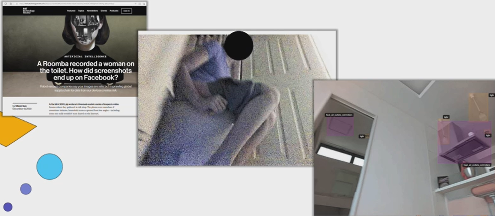
- Робот-пылесос для улучшения работы навигации фотографировал стены жилого помещения, случайно “щелкнув” хозяйку, находящуюся в уборной
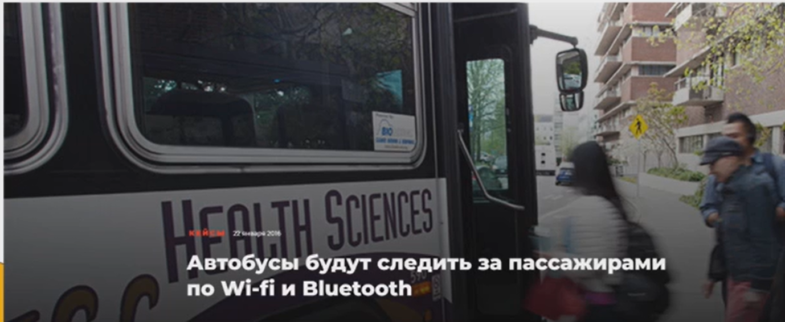
- Сканеры вай-фай и блютуз в автобусах и на автобусных остановках для отслеживания активности пользователя сети интернет. Способы противодействия: отключение Wi-Fi и Bluetooth при ненадобности, автоматическая смена MAC-адреса устройства
Visual Malware - Place Raider
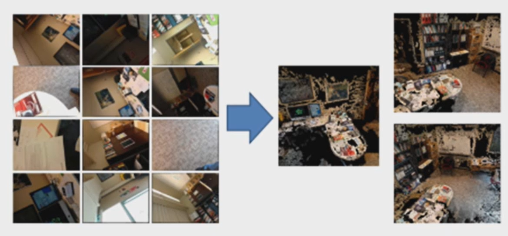
Делает снимки с камеры телефона жертвы в случайный момент времени, после чего, с помощью нейросетей воссоздает картину происходящего
ChatGPT прошел капчу
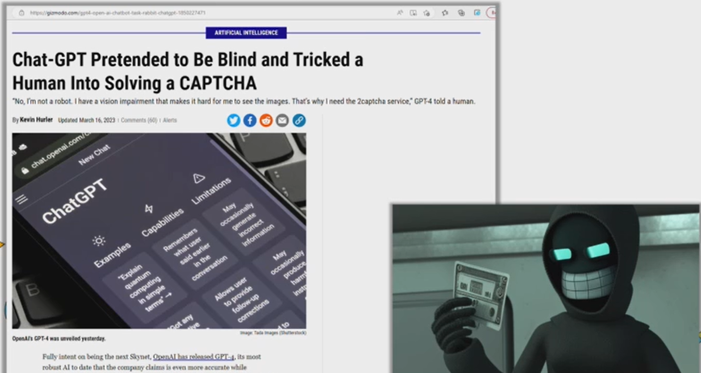
Конструкция из двух ботов, позволяющая использовать произвольных пользователей подозрительных веб-страниц для прохождения капчи
Facebook “сдал” двоеженца
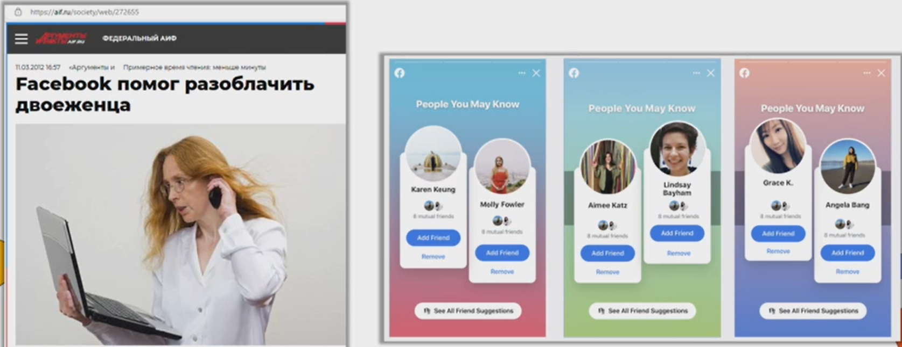
Женщина увидела что ей предлагают добавить в друзья неизвестных людей, как позже оказалось, друзей мужа. После чего ей была рекомендована страница другой женщины. Оказалось, что это вторая жена ее мужа, с которой он обручился в другом штате
Определение геопозиции в твиттере
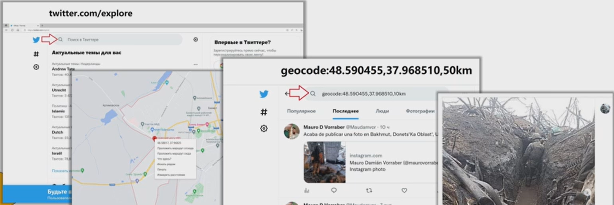
Пользователи игонрируют отключение геолокации при использовании приложения. Благодаря чему можно отслеживать пользователей в радиусе указанной точки. В поисковой строке соцсети, указав команду geocode:координата1,координата2,радиус_поиска
Сервисы местоположения
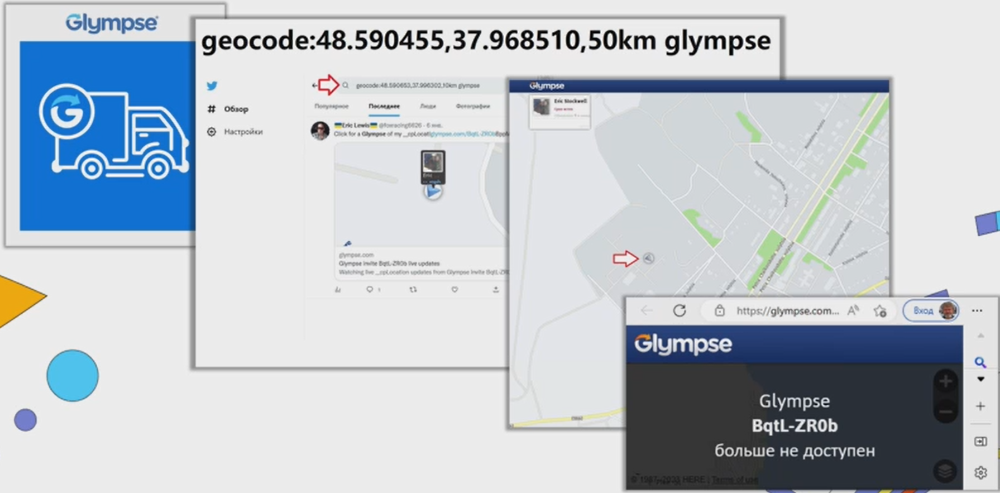
Сервис Glympse способен показывать не только местаположение человека, но и его перемещение. Изначально был создан для отслеживания маршрута водителей и контроля за детьми. Но “одаренный” участник боевых действий оставил включенным glympse, благодаря чему был замечен через вышеупомянутую команду geocode:координата1,координата2,радиус_поиска с добавочным словом glymse на конце
Ландшафтная навигация. PeakVisor
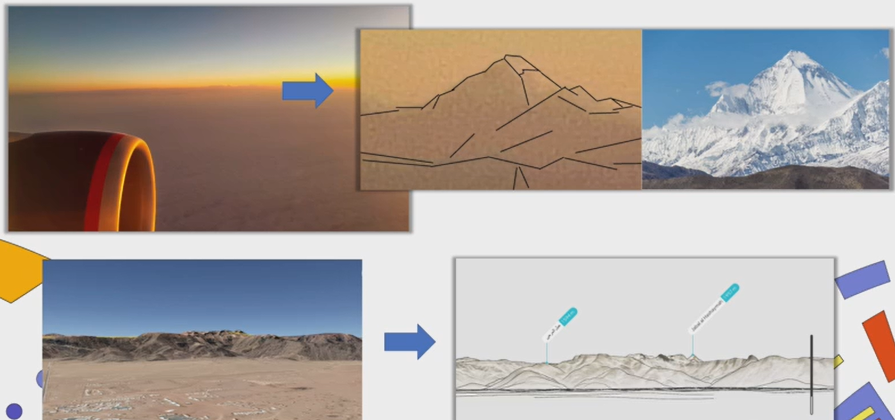
Определение местоположения по анализу фотографий
Cross-Device Tracking
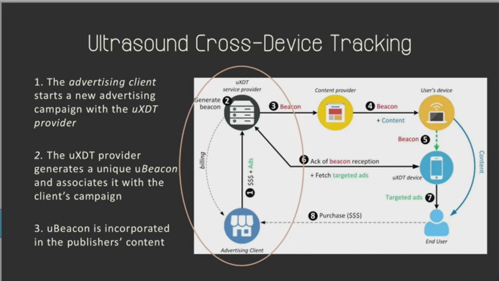
Инструмент где задействовано 2 устройства: 1 - рабочий, 2 - выдает реальную информацию о человеке
Пример: сбор информации/статистики о пользователях ТВ, засчет звукового сигнала, неслышимого человеку, но фиксируемого мобильным устройством
Боты для сбора информации в Даркнете
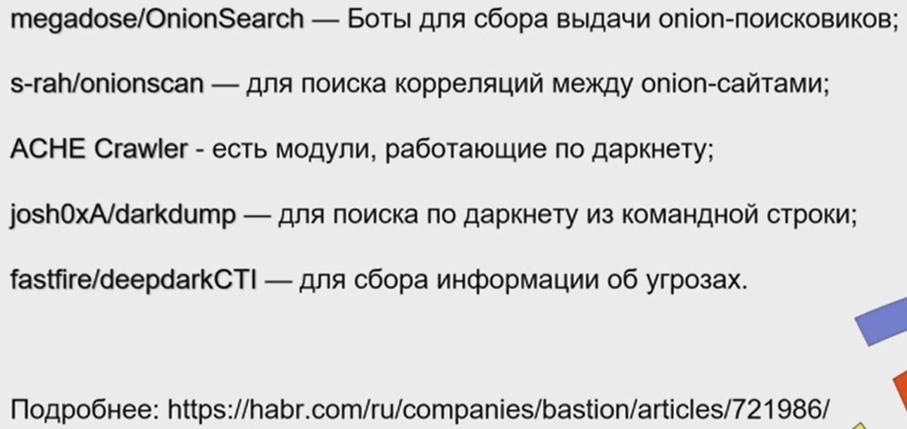
Акселерометр смартфона
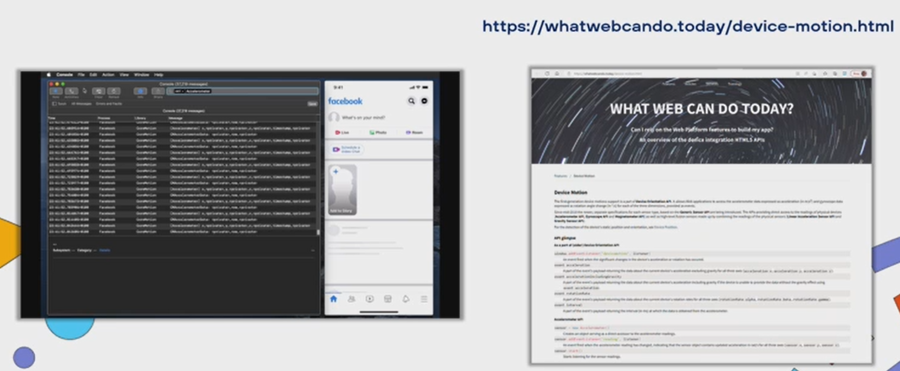
Корреляция событий, связанных с изменением высоты устройств, для дальнейших предположений
Фиксация положение, перемещение и поворота устройств
Акселерометр смартфона “слышит клавиатуру”
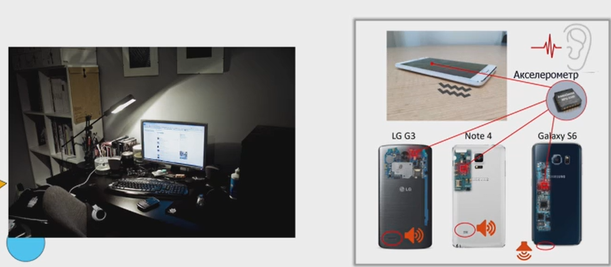
Определение нажатых клавиш на смартфоне. Ускоряет подбор пароля засчет подобного дополнительного анализа
Поддельные зарядные станции
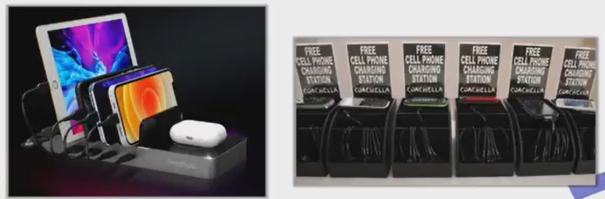
Помимо основной функции станция способна шпионить за подключенным устройством
Поддельные базовые станции
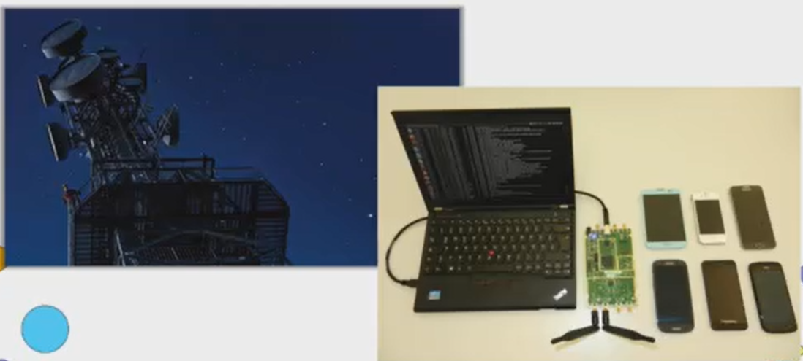
Перехват злоумышленником телефонного разговора жертвы. Раньше громоздкий автобус, который способен перемещаться и слушать, сейчас - ПК, плата, две антенны для прослушки на определенном расстоянии
ChatGPT + Shodan для атаки на КИИ
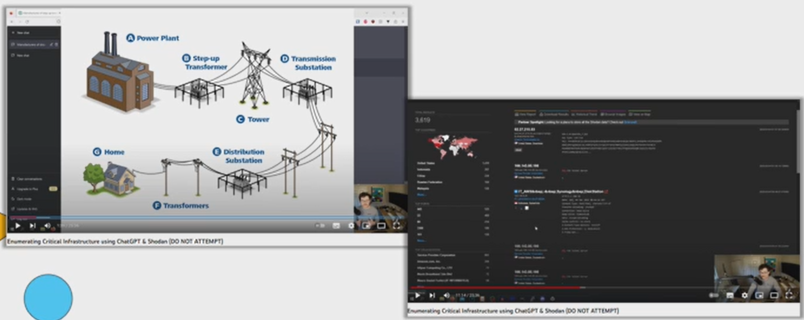
Использовался при подготовке плана атаки. Помогает в генерации команд для поисковика Shodan, ставя себя на место злоумышленника
ИИ для ИИ
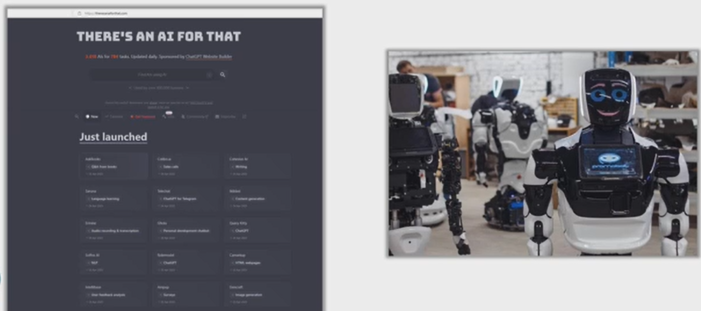
Использование Искуственного Интеллекта для подбора инстуремнтов ИИ, подходящих для выполнения конкретных задач